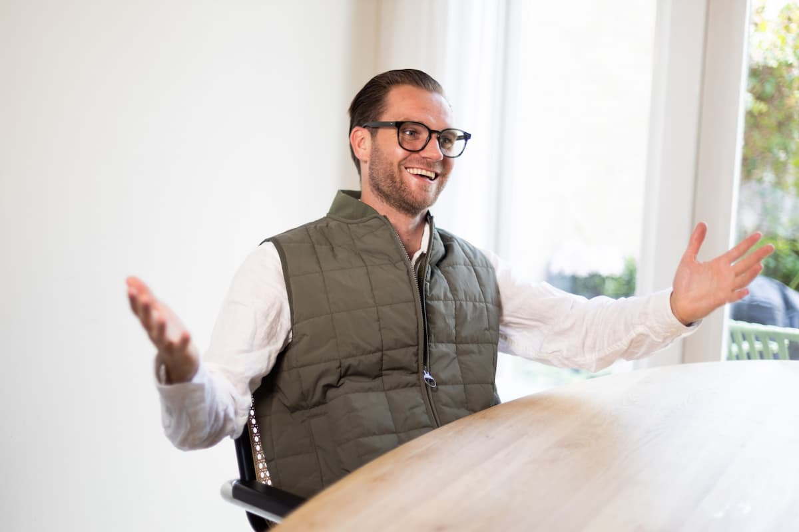

Hoi, ik ben Cees.

Utrecht is mijn uitvalsbasis. Ik help groeiende bv's en groepen die een goede boekhouder hebben, maar geen stuurinformatie.
Je boekhouder verwerkt de cijfers en je accountant maakt de jaarrekening. Dat is belangrijk, maar het is terugkijken. Wat vaak ontbreekt, is iemand die elke maand kijkt hoe het gaat, vooruitkijkt en zorgt dat de bank of investeerders de juiste cijfers krijgen. Dat doe ik.
Je boekhouder en accountant blijven hun werk doen. Ik werk ernaast, niet in plaats van. Mijn achtergrond ligt in de audit bij PwC en KPMG. Een accountantsverklaring geef ik niet.
Wil je dat ik elke maand meekijk? Dan spreken we af waarbij ik je help en hoeveel uur daarvoor nodig is.
Hoe ik hier kwam
- 2011 tot 2018
PwC, audit. Van junior tot senior associate. Klanten in vastgoed, private equity, zorg, onderwijs, detailhandel, biotech, zakelijke dienstverlening, goede doelen en media. Hier leerde ik precies werken met cijfers, en teams aansturen.
- 2010 tot 2013
Eigen webshop, ernaast. Tweedehands gameconsoles en games. Inkoop, verkoop, de site en de administratie: alles zelf. Mijn eerste les in cashflow.
- 2019 tot 2021
Opdrachten als auditor en controller. Supervisor audit bij KPMG (vastgoed, automotive, overheid, zorg, detailhandel). Business controller bij Achmea. Financial controller bij PGGM, met de jaarrekening van twee pensioenfondsen. Interne audit bij de Belastingdienst. Controleleider bij HLB Blömer.
- 2021 tot 2024
Group controller bij Infinitas Learning. Een internationale educatieve uitgeverij. Groepsrapportage en consolidatie, een internal control framework, de integratie na een overname en de invoering van een nieuw ERP-systeem.
- Sinds 2021
Cees de Controller. Fractioneel controller en CFO. Onder meer controller bij Jeugdeducatiefonds en de financiële inrichting van Odoo 19 bij Groene Bouwmaterialen. Odoo Accounting Partner.
- Opleiding
VU Amsterdam, postmaster Accountancy & Control.
Wat ik meeneem uit grotere organisaties
- Een vaste maandafsluiting en groepsrapportage
- Budgetten en rolling forecasts
- Consolidatie van meerdere entiteiten
- Interne beheersing: wie mag wat, en wie controleert
- Invoering van ERP-systemen, van NetSuite tot Odoo
- Voorbereiding op de accountantscontrole
- Dashboards in Power BI
Hoe ik werk
Sturen staat voorop
Elke maand weten hoe het gaat met cashflow, marge en richting. De jaarrekening is daar een gevolg van, geen doel.
Eén vast gezicht
Geen wisselende mensen. Ik leer jouw bedrijf kennen en denk vanuit dat bedrijf mee.
Onafhankelijk
Ik werk voor jou, niet voor je accountant, je bank of een softwareleverancier.
Zo gaan we van start
Intake
30 minuten, gratis. Ik stel vragen, jij vertelt waar je tegenaan loopt.
Grip-scan
Wil je eerst een goed beeld? Dan doen we een Grip-scan: 90 minuten op locatie en een kort verslag met de drie belangrijkste verbeterpunten.
Voorstel
Ik schrijf op wat ik concreet doe, hoeveel uur we plannen en wat het kost. Geen standaardpakket.
Aan de slag
We beginnen met wat nu nodig is. Per maand of per project.